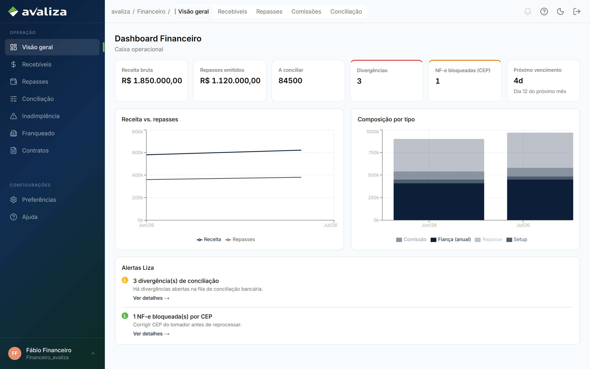
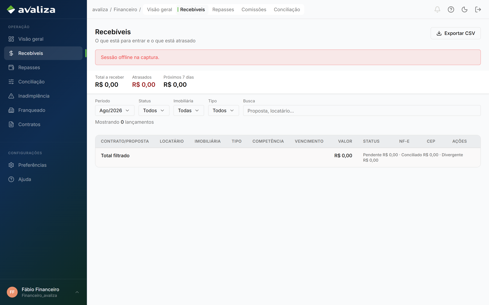

Mover dinheiro · jornada independente
Recebíveis
Dono do resultado: Financeiro — Responsável Financeiro Avaliza
- Gatilho
- Há lançamento a receber (mensalidade, setup, etc.).
- Resultado
- Financeiro sabe o que ainda não entrou.
- Lifecycle
- Fila de caixa de entrada. Não é conciliação nem repasse.
- Atores na operação
- Analista financeiro
financeiro_avaliza
- Analista financeiro
- Dono (setor)
- Financeiro
- Outros setores
- Ninguém além do dono
Entra de
Ponto de entrada. Ninguém neste grafo é obrigado a chegar aqui.
Sai para
Não dispara outra jornada. O ciclo acaba aqui.
Sem linha do tempo forçada
Este ciclo não tem etapas ordenadas. A tela abaixo é evidência, não passo 1 de N.
Telas (evidência)
Superfícies atuais onde este ciclo aparece. Abrir a tela não significa avançar uma etapa.

/financeiro · evidência, não etapa
/financeiro/recebiveis · evidência, não etapaIsto não é esta jornada
- O dashboard mostra alerta; o trabalho é na fila de recebíveis.